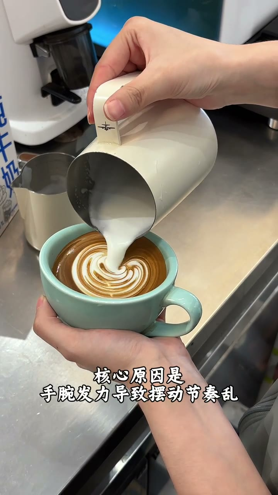
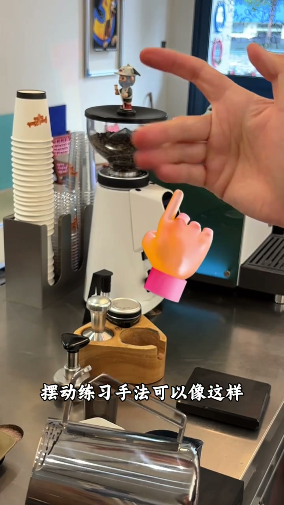
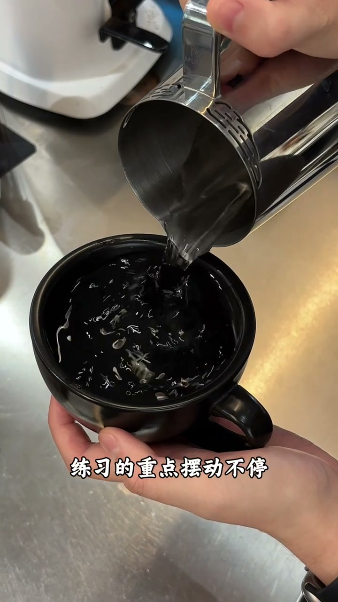

咖啡拉花摆动技巧！零基础保姆级练习教程
查看原视频核心观点
- 新手拉花翻车90%不是奶泡问题，是摆动不会
- 错误：整只手左右移动（那只是倒奶），手腕发力导致节奏乱
- 正确：手臂稳、匀速晃、水流呈S型，后三指发力
- 发力越轻越放松，纹路越细腻
正确的握缸与发力
- 中指、无名指、小拇指放在奶缸把手上
- 手臂打开，手肘与肩关节齐平
- 靠后方三个手指进行左右摆动（不是整只手）
- 匀速惯性运动，发力越轻纹路越细腻

新手7天练习计划
第1天
用水练习，只练动作
让水流呈现S型
每天3组×1分钟
全程不抖，速度均匀
第2天
定点摆动
拿出空杯模拟手法
只摆不退
观察水面波纹
练出整齐平行宽窄一致的纹路
第3天
摆动+匀速后退
摆动不停，后退不加速
全程节奏统一
前期可继续用水
第4-7天
实战牛奶+浓缩
压低出摆→左右摆动
左手回杯，流量原速
不刻意发力
目标：清晰树叶拉花

实战要点
压低奶缸出摆→左右摆动→左手慢慢回杯→摆动流量原速→不用刻意发力→纹路自然清晰。
摆动+后退时：宽幅、流量、频率要确保一致。改掉忽大忽小左右偏移的坏习惯。

核心心法：摆动是匀速惯性运动，不是刻意发力。放松→轻→细腻
文字转录（45段）
以下内容按 Whisper 原始分段完整呈现，可能包含识别误差。
- [0:00]很多新手拉花翻车90%都不是奶泡问题
- [0:03]是摆动不会 手抖 拨纹乱 宽窄不易
- [0:05]拉出来的纹路将硬且不清晰
- [0:08]核心原因是手腕发力导致摆动节奏乱
- [0:11]摆动快慢频率不一致
- [0:14]今天给大家拆解一套拉花摆动核心技巧
- [0:16]从0到1的练习流程 新手照练7天
- [0:19]轻松拉出均匀湿滑纹路
- [0:22]先搞懂拉花摆动的核心原因
- [0:25]拉花摆动不是整只手左右移动
- [0:27]这样不是摆动 只是倒奶
- [0:30]正确的摆动应该是手臂稳 匀速晃
- [0:33]水流呈现S型
- [0:36]摆动练习手法可以像这样
- [0:38]中指 无名指 小拇指放在奶缸把手上
- [0:41]手臂打开 手肘与肩关节齐平
- [0:44]进行左右摆动
- [0:46]靠后方三个手指进行摆动
- [0:49]左右摆动是匀速惯性运动
- [0:52]发力越轻越放松 奶的纹路越细腻
- [0:55]零基础练习摆动 可以先玩水开始
- [0:57]只练动作 让水流呈现S型
- [1:00]每天三组每组一分钟 全程不抖
- [1:03]速度均匀 摆幅一致
- [1:06]稳定之后第二天练习定点摆动
- [1:08]拿出空杯模拟拉花摆动手法
- [1:11]第一位定点摆动 只摆不退
- [1:14]观察水面的波纹
- [1:17]练出整齐平行宽窄一致的纹路
- [1:19]改掉呼大呼小左右偏移的坏习惯
- [1:22]当你学会了稳定摆动之后
- [1:25]第三天可以加上摆动加匀速后退的动作
- [1:27]练习的重点 摆动不停 后退不加速
- [1:30]全程节奏统一
- [1:33]前期可以用水反复练习
- [1:36]坚持练鼠链 基础的拉花直接就能成型
- [1:38]当你掌握了摆动技巧之后
- [1:41]直接用牛奶浓缩液进行实战
- [1:44]压低出摆后 进行左右摆动 边摆
- [1:47]左手慢慢回背 摆动流量 原速
- [1:49]不要刻意发力 这样纹路就会非常清晰
- [1:52]同样我们在摆动的过程中加上后退的动作
- [1:55]摆动的宽幅流量频率要确保一致
- [1:58]这样你就得到了一杯好看的树叶拉花
- [2:00]你学会了吗